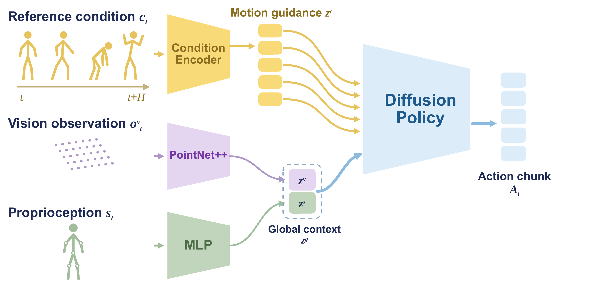
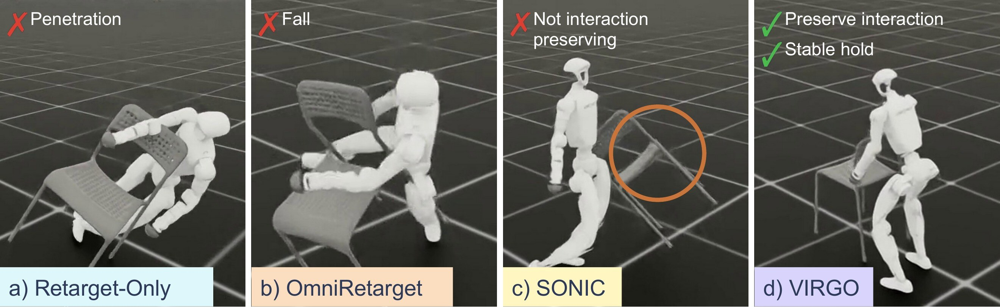

OBJECT INTERACTION
Humanoid whole-body interaction
One policy.
Many ways
to move.
VIRGO: A Visuomotor Reference-Conditioned Generalist for Whole-Body Humanoid Interaction
Human motion specifies the behavior. Egocentric perception helps a shared policy keep the interaction on track.
Human demonstrations · Visual closed loop · Zero-shot sim-to-real
HUMAN TO HUMANOIDVIRGO PROJECT

One shared policy across whole-body interactions
VISUOMOTOR REFERENCE-CONDITIONED GENERALISTSCROLL TO EXPLORE
01THE IDEA
From human motion to humanoid interaction.
VIRGO learns diverse whole-body behaviors from human MoCap and monocular video, without teleoperated robot training data. Motion-group reinforcement learning experts teach one reference-conditioned visuomotor diffusion policy. At deployment, the frozen policy combines the desired motion with onboard point-cloud and proprioceptive feedback.
Object interactionSittingClimbingOne frozen policy
02THE FILM
Supplementary video
See the interactions
in motion.
The full film follows VIRGO from human references through robot execution, onboard perception, real-world demonstrations, and simulation comparisons.
FULL FILM · 3 MINMoCap and video references · Hardware and simulation
Real-world sequences
Individual examples from the supplementary footage, all using the same frozen student.
OBJECT INTERACTION
Push a chair
SUPPORT TRANSITION
Sit on a chair
SUPPORT TRANSITION
Climb a platform
03THE APPROACH
Expert to generalist
Experts teach.
One student learns.
VIRGO separates learning physically feasible reference tracking from learning to act with onboard perception.
Retarget
Human MoCap and video-derived motion become robot references that preserve body–scene interactions.
Track
State-based RL experts learn to follow reference groups in simulation with privileged scene state.
Distill
Mixed behavior cloning and online DAgger train one reference-conditioned diffusion student.
Deploy
The frozen student uses segmented ego point clouds, proprioception, and a motion-reference window.
PIPELINE OVERVIEW

REFERENCE-CONDITIONED STUDENT

ONBOARD PERCEPTION

04THE RESULTS
Held-out references in simulation
One policy across
three task families.
Progress is the mean fraction of a reference trajectory completed before failure. The values below are for held-out references using the deployable student policy.
OBJECT INTERACTION0.828
Mean trajectory progress across held-out object-interaction references.
CLIMBING0.631
Mean trajectory progress across held-out climbing references.
SITTING0.557
Mean trajectory progress across held-out sitting references.
VIRGO has the highest held-out Progress across all three task families among the evaluated deployable methods. The paper also reports higher object-pose errors than several baselines, computed only before failure.
UNSEEN CHAIR REFERENCE

VISUAL RECOVERY

05THE SHOWCASE
From simulation to a Unitree G1
A wider range of
whole-body behavior.
One frozen policy follows MoCap and video-derived references across object handling, sitting, and climbing.

REAL ROBOT / ONE FROZEN POLICY
Interaction beyond locomotion.
The same G1 policy carries objects, pushes furniture, lifts a bucket, sits on different supports, and climbs indoor and outdoor terrain.

SIMULATION / TASK COVERAGE
Many tasks, one learning route.
The evaluation suite spans objects of varied shapes and sizes, stools of different heights, and climbing onto steps and boxes.
HUMAN VIDEO TO ROBOT

HARDWARE GENERALIZATION

06THE RESEARCH
Project summary
About VIRGO
VIRGO is a visual sim-to-real framework for learning diverse whole-body humanoid interactions from human demonstrations. It retargets MoCap trajectories into robot references, trains state-based reinforcement learning experts, and distills their behavior into one reference-conditioned visuomotor diffusion policy through mixed behavior cloning and online DAgger.
At deployment, MoCap or video-derived references specify the desired behavior while egocentric visual feedback and proprioception support closed-loop execution. The same frozen student transfers zero-shot to a Unitree G1 across object interaction, sitting, and climbing, without task-specific fine-tuning.
Scope. VIRGO follows a supplied reference; deviations that require a different interaction may exceed what that reference can support.
Research materialsWatch the supplementary video · Paper and code links will be added when released.